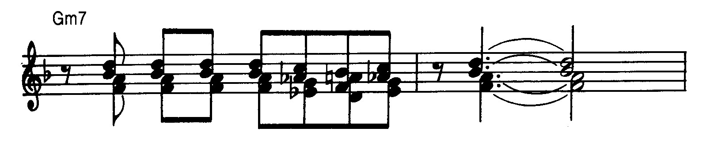
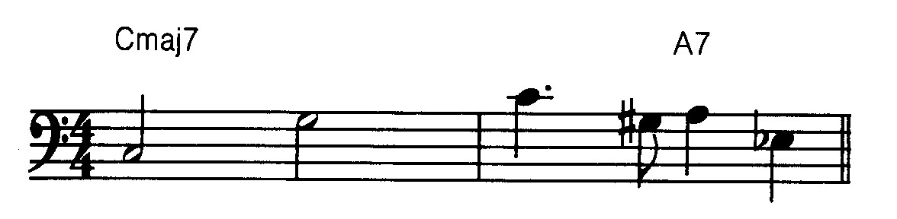
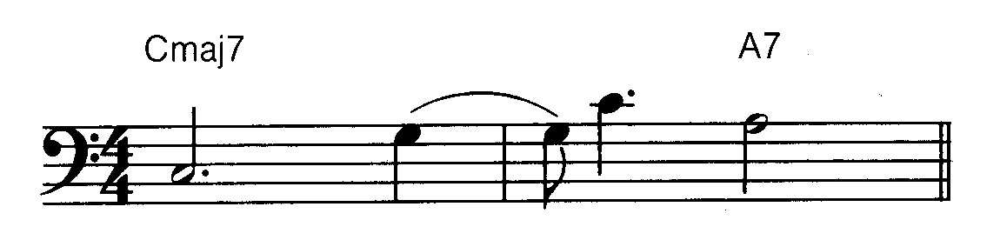
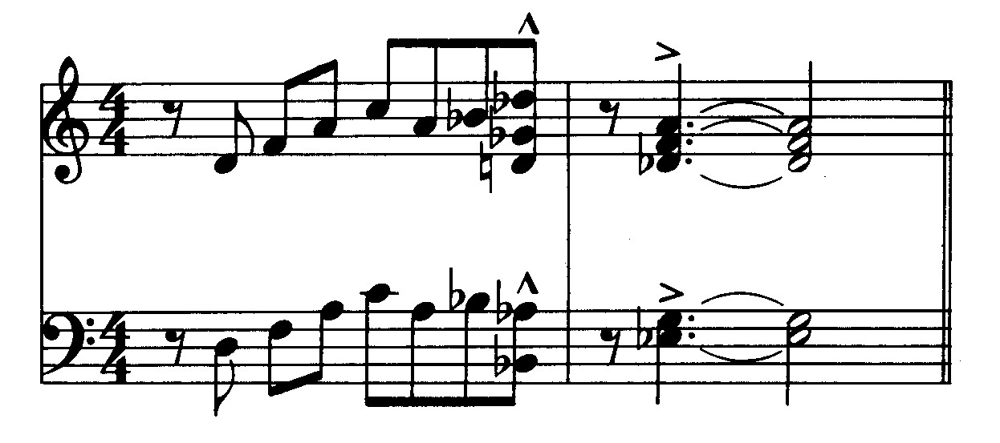
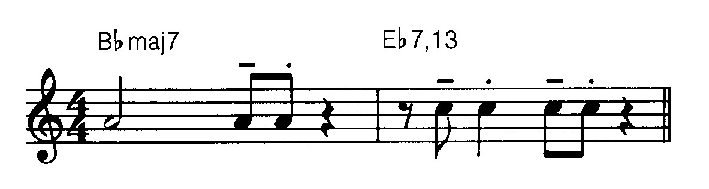
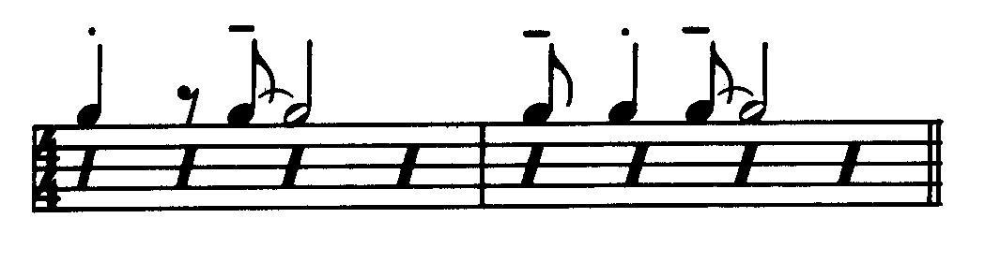

{kind=link}
{kind=link}
{kind=link}
{kind=link}
{kind=link}

UNE APPROCHE LINEAIRE
Auteur : Bill Dobbins
L’intention de ce livre est de mettre en lumière une conception claire et économique de l’arrangement et de la composition dans un idiome “jazzistique”. Dans mon esprit, cette conception est avant tout linéaire. Le but de cette conception est de donner à chaque instrument, au sein de l’orchestre, une ligne qui soit aussi mélodique que possible. Parfois, ce but peut être atteint grâce aux techniques traditionnelles d’arrangement ou d’harmonisation d’une mélodie. Souvent, cependant, deux ou plusieurs techniques peuvent être combinées pour obtenir un son plus riche, plus coloré. Et quelquefois il est possible de donner à chaque instrument à vent une ligne harmonieuse et mélodiquement indépendante, tout en créant, en même temps, une forte sensation de mouvement harmonique.
Je pense qu’il est important de donner une bonne ligne mélodique à chaque instrument, pour deux raisons :
Premièrement, quand chaque musicien dans un ensemble joue une partition qui possède un sens musical intéressant et qui est agréable à jouer, alors chacun est à même d’interpréter cette musique avec beaucoup plus d’enthousiasme et de conviction.
Deuxièmement, quand les lignes individuelles se meuvent d’une manière claire et convaincante, la structure de la musique est plus puissante et plus riche.
J’ai découvert ces idées fondamentales en étudiant la musique du plus grand de tous les compositeurs de jazz : Duke Ellington. Je me demandais toujours pourquoi la musique de Duke Ellington était constamment plus colorée, plus éclatante que celle de la plupart des autres compositeurs de jazz. Bien sûr, la chaleur et le “son” personnel de chaque musicien en était un facteur important. Pourtant, après avoir transcrit soigneusement une partie de cette musique, je commençai à remarquer qu’il n’y avait que très peu de redoublements des mêmes sons, et qu’une ou plusieurs des voix au-dessous de la mélodie se déplaçaient souvent de façon indépendante. D’une manière plus importante encore, ce déplacement indépendant était un moyen de donner à chaque instrument une bonne ligne mélodique. Ce n’était pas non plus un étalage de technique, ou l’utilisation de la complexité pour son seul intérêt. Il a été rapporté qu’après la répétition d’un de ses nouveaux morceaux avec l’orchestre d’Ellington, Billy Strayhorn demandait toujours à chacun des musiciens s’il avait apprécié sa partition. À cause de cet intérêt pour des lignes mélodiques individuelles puissantes, Ellington et Strayhorn obtenaient souvent un son plus riche avec trois ou quatre instruments à vent que la plupart des compositeurs avec six ou huit. La musique d’Ellington semble aussi être le meilleur exemple de l’économie de moyens, dans la tradition “jazzistique” : la capacité de pouvoir exprimer une idée musicale de façon parfaitement claire, avec le moins de notes possibles. Tout arrangeur ou compositeur de jazz important de ces quarante dernières années a, et cela est reconnu, été influencé par cet aspect du travail d’Ellington.
L’économie en musique est un sujet tout aussi important. Il est primordial pour un jeune arrangeur ou compositeur d’entendre chaque nouveau morceau interprété, afin de pouvoir étudier la clarté de l’expression musicale et du développement. D’une façon générale, il est plus facile de réunir quatre ou cinq instruments à vent et une section rythmique qu’un grand orchestre complet. Les petits groupes ont beaucoup plus de chances de se produire puisqu’ils peuvent se déplacer d’une manière beaucoup moins onéreuse que les grands ensembles. Ce livre se concentrera sur la composition et l’arrangement pour de petites formations comprenant de deux à cinq instruments à vent et une section rythmique. Pour montrer, avec clarté, toutes les techniques et tous les styles, j’ai choisi deux compositions originales et personnelles de caractère différent. Minor D est un blues mineur harmoniquement simple. La mélodie comporte peu de notes et elle est jouée à un tempo relativement lent. Blues for Barry est un blues majeur harmoniquement complexe. La mélodie comporte plus de notes et est jouée à un tempo plus rapide. La forme du blues a été choisie pour que des arrangements de chacun de ces morceaux puissent être inclus dans le Chapitre Sept. Pour montrer un développement formel, six ou huit “structures” (chorus(es) : voir glossaire) d’une forme courte (comme, par exemple, le blues) offrent plus de possibilités que deux ou trois “structures” (chorus(es) : voir glossaire) d’une forme plus longue. Une composition étendue, en trois mouvements, est cependant incluse, de manière à montrer davantage de possibilités en ce qui concerne l’équilibre entre les variations musicales et l’unité structurale sur une large échelle. En étudiant plusieurs manières possibles d’arranger les mêmes morceaux pour deux, trois, quatre, cinq instruments à vent, une compréhension claire des techniques de base de l’arrangement émergera, en même temps qu’une idée claire des possibilités plus avancées de l’approche linéaire. Quand cinq instruments à vent pourront être utilisés économiquement et avec efficacité, il sera assez facile de commencer à écrire pour un grand orchestre. Pour l’étude de l’arrangement et de la composition pour grand orchestre, je recommande Inside the Score par Rayburn Wright (Kendor Music Inc.). Je pense que ce livre représente le meilleur ouvrage actuellement disponible pour l’étude de l’écriture pour grand orchestre, et cela pour deux raisons :
Premièrement, il renferme les orchestrations (scores : voir glossaire) complètes de compositions de trois compositeurs pour grand orchestre les plus représentatifs de la musique de jazz depuis Ellington : Sammy Nestico, Thad Jones et Bob Brookmeyer.
Deuxièmement, la discussion et l’analyse de l’écriture et des styles par Rayburn Wright sont claires, apportant des éclaircissements et une contribution bienvenue quant à la compréhension et à la continuation de cette importante tradition musicale.
En écoutant les disques des grands orchestres mentionnés sur la liste de la discographie finale, l’élève-arrangeur sera capable de découvrir de nombreuses occasions d’employer des techniques d’écriture pour petites formations à l’intérieur des arrangements pour grand orchestre. Duke Ellington, Billy Strayhorn, Gil Evans, Gerry Mulligan, George Russell, Bob Brookmeyer et Clare Fischer ont tous fait un usage très efficace de petits groupes d’instruments à l’intérieur d’un large ensemble.
La discographie à la fin de chaque chapitre sera utile pour une étude plus poussée de chaque instrumentation particulière. L’élève-arrangeur devra transcrire certaines parties de ces enregistrements de façon à développer une oreille plus sensible et plus fine. En commençant avec des enregistrements de groupes comportant deux instruments à vent il sera possible, après quelques années de travail méthodique, d’entendre des textures comportant quatre ou cinq instruments à vent avec une précision satisfaisante.
Ce développement de l’oreille est essentiel, à la fois pour l’appréciation et la compréhension des arrangements et compositions de jazz classique, et pour développer éventuellement une approche plus personnelle de l’écriture de la musique de jazz. C’est peut-être une bonne chose que l’on ne puisse se procurer, en les achetant, les conducteurs, les arrangements (scores : voir glossaire) des plus grandes oeuvres de jazz. Cet état de chose protège la musique de ceux qui pourraient s’en servir d’une manière irresponsable. Les seuls musiciens qui étudient la musique complètement et avec précision sont ceux dont les oreilles et le coeur sont suffisamment sensibles pour la recevoir.
L’aptitude à harmoniser n’importe quelle mélodie donnée dans un style approprié est un savoir-faire essentiel pour l’arrangeur professionnel. L’harmonisation traditionnelle à quatre voix en position fermée (close position : voir glossaire) sera la façon la plus pratique pour expliquer les techniques de base de l’harmonisation d’une mélodie. En effet, quatre voix sont nécessaires pour exprimer la majeure partie des accords employés généralement dans la musique de jazz, et de plus l’harmonisation en position fermée (close position : voir glossaire) facilite l’identification de chaque note de l’accord par rapport à la fondamentale de cet accord. Les harmonisations (voicings : voir glossaire) contiendront généralement la fondamentale, la tierce, la quinte et la septième, ou bien la tierce, la quinte, la septième et la neuvième, tout en sachant que ces quatre notes pourront être altérées chromatiquement.
L’approche linéaire s’explique plus facilement en utilisant des harmonisations (voicings : voir glossaire) en position ouverte (open position : voir glossaire). Les harmonisations en position ouverte donnent la possibilité à l’auditeur d’entendre les lignes instrumentales individuelles avec plus de facilité. Cependant, avant d’examiner les techniques, il est nécessaire d’analyser la mélodie donnée selon les critères suivants :
Arpèges ou mouvement d’une note de l’accord à une autre note de l’accord.
Gamme ou fragments de gamme.
Mouvement mélodique par demi-ton.
La relation de chaque note de la mélodie avec l’accord l’accompagnant.
L’exemple 1 comprend la mélodie et la progression d’accords de Minor D avec une analyse des particularités mentionnées ci-dessus.
L’exemple 2 comprend cinq harmonisations différentes de Minor D.
mes. 1-3, mes. 4-6, mes. 7-9, mes. 10-12
Les deux premières, A et A1, sont écrites dans un style assez classique ressemblant à celui des arrangeurs Neal Hefti et Sammy Nestico.
version A (position fermée) version A (position ouverte) version A1 (position fermée) version A1 (position ouverte)
La version B utilise des éléments de style que l’on associe à Duke Ellington et Billy Strayhorn.
version B (position fermée) version B (position ouverte)
La version C est écrite dans un style semblable à l’écriture à quatre voix employée par Oliver Nelson.
version C (position fermée) version C (position ouverte)
La version D évoque l’oeuvre et les travaux de Gil Evans dans les années soixante.
Toutes ces différentes harmonisations mettent clairement en lumière l’ensemble des techniques de base d’harmonisation ainsi que l’approche linéaire. On peut remarquer que les fondamentales des accords sont souvent omises dans les harmonisations étant donné qu’elles sont jouées par la contrebasse au sein de la section rythmique. L’étude détaillée de la section rythmique sera réalisée au paragraphe 3. Les différentes versions de Minor D sont disposées les unes sous les autres de manière à ce que les variations harmoniques puissent être aisément comparées. Dans chaque version, la progression des accords fondamentaux est écrite au-dessus de la mélodie (comme dans une partition normale), les accords de base de l’harmonisation de la mélodie apparaissent en dessous de la portée, et les notes spécifiques utilisées pour chaque harmonisation sont écrites sous le symbole de chaque accord. Nous allons examiner chaque version en détails.
La mélodie est formée d’un fragment de la gamme de Ré dorien entre les notes La et Do.
La version A emploie la technique de base du parallélisme diatonique. Les quatre voix se déplacent parallèlement dans la gamme de l’accord. Les deux notes fondamentales de l’accord de la mélodie (La et Do) sont harmonisées avec les degrés 1-3-5-7 et 3-5-7-9 de l’accord de Ré mineur dorien (Dm dorian), la note de passage Si♮ est harmonisée avec les degrés 1-3-5-7 de Mi mineur, l’accord diatonique voisin dans la gamme de Ré dorien (D dorian).
version A (position fermée) version A (position ouverte)
La version A1 emploie la technique de la tonicisation. L’accord du moment est traité comme un accord de tonique temporaire. Une progression d’accord est alors construite qui arrive à cet accord de tonique temporaire. Dans cet exemple, on utilise la forme de tonicisation la plus élémentaire. La note de passage Si♭ est harmonisée avec les degrés 3-5-7-9 de l’accord de dominante de Rém7 (l’accord du moment). Cela aboutit à la progression Rém7-La7-Rém7.
version A1 (position fermée) version A1 (position ouverte)
La version B emploie la technique fondamentale du parallélisme chromatique. Quand la mélodie se déplace par demi-ton (de Si♮ à Do), on emploie les degrés 3-5-7-9 des accords Do♯m7 et Rém7. En conséquence, les quatre voix se déplacent d’une manière chromatiquement parallèle. La note de passage descendante est cependant harmonisée en se servant du parallélisme diatonique comme dans la version A. Étant donné que la note de passage descendante se résout sur la note suivante avec un intervalle de un ton, la technique du parallélisme diatonique entraîne une progression harmonique beaucoup plus convaincante. Cela donne aussi des lignes mélodiques plus puissantes dans la deuxième et la quatrième voix.
version B (position fermée) version B (position ouverte)
La version C harmonise l’intervalle par ton de La à Si en se servant du parallélisme chromatique (3-5-7-9 degrés de Ré mineur à Mi mineur). Ceci engendre deux nouveaux sons : intervalles de seconde mineure dans les voix inférieures et une relation d’harmonie croisée qui provient de l’alternance des notes Fa♯ et Fa dans la tonalité de Ré mineur. La troisième voix (Mi, Fa♯, Fa, Fa♯) est gauche, peu élégante à jouer puisqu’elle n’est pas très mélodique et difficile à entendre par rapport à la tonalité de Ré mineur. Bien que le son coloré de cette version puisse justifier cette maladresse, la version D offre une solution bien meilleure avec une harmonisation en position ouverte (open position : voir glossaire).
version C (position fermée) version C (position ouverte)
La version D arrange les mêmes notes contenues dans la version C, mais en utilisant l’approche linéaire. Les deuxième et quatrième voix se déplacent d’une façon plus indépendante par rapport à la mélodie, mais elles sont faciles à entendre et à jouer. De plus, la troisième voix de la version C, gauche et maladroite, emploie maintenant la note Fa♯ d’une manière beaucoup plus mélodique.
La solution ci-dessous peut être utilisée en “position fermée” (close position : voir glossaire) si les deuxième et quatrième voix se croisent comme le montre l’exemple ci-dessous.
La version ci-dessus sera efficace si l’objectif est simplement d’arriver à ce que les lignes de chaque musicien soient plus faciles à jouer. Mais, si le but recherché est d’attirer l’attention sur les lignes elles-mêmes, la solution en “position ouverte” (open position : voir glossaire) de la version D sera plus efficace.
Les solutions auxquelles on aboutit par l’emploi de l’approche linéaire ne seront jamais découvertes par des arrangeurs qui ne pensent qu’en termes de progressions harmoniques et d’harmonisations verticales d’accords. L’approche linéaire est basée sur l’idée que l’harmonie la plus forte est actuellement le contrepoint, même si les différentes lignes se déplacent d’une manière rythmiquement identique.
Dans les trois premières mesures de Minor D, les notes La et Do sont des notes fondamentales de l’accord du moment (Rém7). C’est la note de passage Si♭, dès lors, qui a le plus de possibilités en termes d’harmonisations différentes. En règle générale, il est préférable d’harmoniser les notes fondamentales de l’accord en premier, spécialement celles qui se rencontrent sur les temps forts ou celles qui sont soutenues sur une longue durée. Les autres notes seront harmonisées ensuite, en se servant des techniques de base mentionnées ci-dessus.
La mélodie approche par demi-ton la quinte augmentée de l’accord Ré7 avec un mouvement ascendant.
La version A utilise la technique d’harmonisation la plus évidente: le parallélisme chromatique. Premièrement, la note Si♭ est harmonisée avec les degrés 3-5-7-9 altérés de Ré7. Les quatre voix se déplacent ensuite chromatiquement et parallèlement à la mélodie.
version A (position fermée) version A (position ouverte)
La version A1 utilise la même technique, mais avec une harmonisation différente de Ré7. Écoutez attentivement les subtiles différences de son entre les deux harmonisations de Ré7. Il est extrêmement important d’avoir conscience de ces différences de sons créées par les plus petites modifications harmoniques.
version A1 (position fermée) version A1 (position ouverte)
La version B emploie la technique de la tonicisation (La7 est l’accord de dominante de Ré7). Remarquons que la deuxième et la quatrième voix se déplacent vers le bas par ton, pendant que la première et la troisième voix se déplacent vers le haut par ton également. Le mouvement contraire peut être employé avec efficacité pour mettre l’accent sur une phrase particulière ou sur un fragment mélodique.
version B (position fermée) version B (position ouverte)
La version C continue l’accord de Rém7 sur la première croche de cette mesure. On trouve un mouvement contraire à la troisième voix, et une note répétée dans la quatrième voix. Lorsqu’on harmonise une ligne mélodique dans laquelle on trouve des croches chaque fois différentes, les répétitions d’une même note doivent être évitées, sauf si cette répétition de note se produit aussi dans la ligne mélodique. Il est souvent difficile pour les instrumentistes à vent de phraser ensemble lorsque certains ont des notes répétées et d’autres pas. Il n’y a cependant pas de problème réel dans cette mesure, du fait qu’il n’y a que deux notes répétées et que le tempo n’est pas très rapide.
version C (position fermée) version C (position ouverte)
La version D emploie une pure approche linéaire. Le premier accord (voicing : voir glossaire) n’a pas de relation harmonique réelle avec Ré7. Il peut être analysé comme étant un accord parfait à trois sons de Fa♯ mineur (triad : voir glossaire) avec la septième majeure à la voix la plus basse, ou bien comme un accord de RéMaj7 avec une tierce mineure à la voix la plus basse. Dans ces deux cas, il s’agit seulement d’une sonorité de passage qui n’a pas de fonction harmonique. La deuxième et la troisième voix sont des notes de passage chromatiques qui se dirigent vers la neuvième augmentée et la septième de Ré7, pendant que la quatrième voix, par demi-ton chromatique, retourne à la tierce de l’accord Ré7. Cette solution linéaire “sonne” de façon convaincante pour deux raisons : premièrement, les trois voix supérieures forment un simple accord mineur de trois sons (triad) qui rend la dissonance de la quatrième voix moins stridente ; deuxièmement, et surtout, la dissonance se résout immédiatement par un enchaînement de notes (voice leading) sans à-coups. Cette solution n’a pu être découverte qu’à l’aide d’une expérimentation des différentes possibilités d’enchaînement des notes (voice leading). C’est un exemple parfait d’approche linéaire. Un traitement légèrement plus conventionnel est montré ci-dessous.

La mélodie est formée d’un fragment de la gamme de Sol dorien. Je dis Sol dorien puisque la sixte majeure (Mi naturel) est sous-entendue par l’armure, à la clé du morceau, et qu’il n’y a pas de Mi, à proximité, dans la ligne mélodique.
La version A emploie la technique la plus fondamentale : le parallélisme diatonique.
version A (position fermée) version A (position ouverte)
La version A1 emploie la tonicisation. Fa♯°7 est l’accord de septième diminuée qui se résout normalement avec Solm7.
version A1 (position fermée) version A1 (position ouverte)
La version B emploie une combinaison des méthodes de tonicisation et de parallélisme chromatique. Les trois voix sous la mélodie donnent des accords parallèles diminués de trois sons (triads) qui aboutissent à l’accord Fa♯°7. De cette manière, les notes Ré formant la mélodie sont traitées comme une pédale mélodique. L’accord de Fa♯°7 se résout comme dans la version A1 dans l’accord de Sol mineur. Dans la version B, cependant, Solm6 est employé à la place de Solm7. L’utilisation des accords de sixte mineure est d’un emploi fréquent chaque fois que ceux-ci fonctionnent comme des accords de tonique (I). Dans Minor D, les deux accords Ré mineur et Sol mineur sont des accords de tonique (I). Ré mineur est la tonalité du morceau et l’accord de Sol mineur est préparé par la modulation à la tonalité de Sol mineur (Ré7alt-Solm6).
version B (position fermée) version B (position ouverte)
Les accords mineurs qui fonctionnent comme des accords du second degré (II) dans une progression de type II-V doivent, cependant, contenir la septième ; autrement, ils sonnent comme une harmonisation des degrés 3-5-7-9 de l’accord de dominante (V).
 .
.
La version C emploie la technique du parallélisme chromatique pour harmoniser l’intervalle d’un ton entre Ré et Do. L’emploi d’un intervalle de demi-ton entre la mélodie et la seconde voix, comme on peut le voir sur le quatrième temps de la cinquième mesure, est extrêmement rare. L’emploi d’intervalles plus petits qu’une tierce entre la mélodie et la seconde voix peut aisément empiéter sur la mélodie, l’obscurcir. Dans ce cas pourtant, l’intervalle de demi-ton est approché et abandonné par mouvement contraire. En se servant de l’approche linéaire, le demi-ton n’empiète pas sur la mélodie. De plus, l’emploi fréquent des intervalles de demi-ton dans l’harmonisation des voix permet de donner à la version C une unité de son.
version C (position fermée) version C (position ouverte)
Comme pour les mesures 1 à 3, la ligne mélodique dans la seconde voix (Bb, Ab, A, Ab, Bb) est quelque peu malaisée à jouer. Le croisement de la deuxième et de la troisième voix apportera une ligne plus mélodique à la seconde voix.

La version D ajoute la quarte à l’accord de Sol mineur. La quarte est parfois une note intéressante pour les accords mineurs, puisqu’elle ajoute une couleur harmonique sans en changer la sonorité mineure fondamentale. Les intervalles apparents de neuvième mineure entre les deuxième et quatrième voix des mesures 1 à 3 et entre la mélodie et la quatrième voix dans les mesures 5 et 6 sont rarement employés en jazz. Ces intervalles ont une sonorité plus convaincante lorsque les voix supérieures créent des sons plus consonnants, tels que les accords de trois sons (triads) que l’on retrouve dans ce morceau. Quand elles sont employées de cette façon les neuvièmes mineures ajoutent une couleur forte et distincte, sans détruire la qualité fondamentale des accords, ni de la tonalité.
La mélodie se compose d’un fragment de gamme chromatique descendant entre la septième et la quinte de l’accord de Rém7.
La version A emploie les techniques les plus fondamentales. Le parallélisme diatonique est employé pour harmoniser les deux premières notes de la mélodie. Le parallélisme chromatique est employé pour harmoniser le reste de la phrase.
version A (position fermée) version A (position ouverte)
La version A1 emploie la combinaison de la technique de tonicisation et de parallélisme chromatique. L’accord de Mi♭7, qui présente une relation de triton avec l’accord de La7, est employé comme un accord de substitution se dirigeant vers Ré mineur. La substitution du triton est la substitution la plus employée en jazz. L’accord de Mi♭7 est lui-même approché chromatiquement par Mi7. Par conséquent, au lieu d’avoir la progression fondamentale Mi7-La7-Rém, nous avons la progression Mi7-Mi♭7-Rém. Une fois encore, un accord mineur tonique (Rém6,9) est employé à la place de Rém7.
version A1 (position fermée) version A1 (position ouverte)
La version B emploie le parallélisme chromatique utilisé précédemment dans les mesures 5 et 6 d’une manière similaire. Ceci contribue à donner à la version B une unité de son.
version B (position fermée) version B (position ouverte)
La version C emploie le parallélisme chromatique. Notez que l’harmonisation des degrés 3-5-7-9 de Dom7 contient les mêmes notes que l’accord de Mi♭Maj7. Ceci implique une variante de la substitution du triton de La7 (Mi♭Maj7-Rém7 au lieu de La7-Rém7).
version C (position fermée) version C (position ouverte)
La version D emploie le parallélisme chromatique, mais il y a plus d’indépendance dans le mouvement de chaque ligne individuelle. La progression fondamentale employée est Rém7-Mi7-Mi♭7-Rém7, mais le mouvement contraire sur les troisième et quatrième temps de la mesure 7 ajoute un intérêt musical certain. L’harmonisation du quatrième temps de la mesure 7 est extrêmement rare. Il ne contient pas de tierce, et la neuvième mineure est située à la voix inférieure. Cela “sonne” d’une façon convaincante uniquement parce que l’enchaînement des notes (voice leading) se fait sans heurt. Le mouvement de la quatrième voix de Fa♯ à Fa nous renvoie ou rappelle le mouvement de Fa à Fa♯ de la mesure 4.
La mélodie se compose d’un fragment de la gamme lydienne et mixolydienne de Si♭.
La version A suggère une autre technique fondamentale : l’emploi des renversements des quatre mêmes degrés de l’harmonisation (3-7-9-♯11 est la même chose que 3-5♭-7-9 puisque la ♯11 et la ♭5 représentent la même note). Dans ce cas cependant, la seconde harmonisation a été légèrement changée pour éviter le son inopportun de la gamme par ton. L’emploi des renversements sera étudié plus en détail au chapitre V.
version A (position fermée) version A (position ouverte)
La version A1 emploie la tonicisation, étant donné que l’enchaînement des voix (voice leading) de Si7 à Si♭7 n’est pas chromatiquement parallèle. Si7 est la substitution du triton de Fa7, l’accord de dominante normal de Si♭7.
version A1 (position fermée) version A1 (position ouverte)
La version B emploie la tonicisation d’une manière plus élargie, allant de Do7 (l’accord de dominante de Fa) à Fa7 (l’accord de dominante de Si♭), et ensuite à Si♭7.
version B (position fermée) version B (position ouverte)
La version C emploie le parallélisme chromatique. Notez que les harmonisations, qui contiennent seulement les extensions des accords, contiennent aussi des intervalles d’un demi-ton qui sont caractéristiques de cette version.
version C (position fermée) version C (position ouverte)
La version D ne peut être expliquée qu’en termes d’approche linéaire. L’harmonisation finale (voicing) est approchée par des accords de trois sons (triads) se déplaçant suivant les degrés de la gamme pour les trois voix supérieures, et par un mouvement chromatique ascendant à la voix inférieure. Une fois encore, l’emploi pour les voix supérieures de sons consonnants, et un enchaînement de notes (voice leading) sans heurts, en font une solution convaincante. La première sonorité de la mesure est un accord de trois sons (triad) de Do avec un Fa♯ au-dessous, mais cette sonorité n’a pas de relation évidente, ni apparente, avec l’accord de Si♭7. Cette sonorité crée une tension harmonique qui se résout immédiatement par un enchaînement de notes (voice leading) sans heurts dans les quatre voix.
La mélodie est formée d’un fragment de la gamme de La altérée.
La version A emploie le parallélisme chromatique (Si♭7-La7).
version A (position fermée) version A (position ouverte)
La version A1 emploie aussi le parallélisme chromatique, mais avec des harmonisations différentes des accords de Si♭7 et de La7.
version A1 (position fermée) version A1 (position ouverte)
La version B emploie la technique de tonicisation (Fa7-Si♭7), et celle du parallélisme chromatique (Si♭7-La7).
version B (position fermée) version B (position ouverte)
La version C emploie la technique de tonicisation, étant donné que les harmonisations de Si♭7 et de La7 ne sont pas parallèlement chromatiques. Si♭7 est la substitution du triton de Mi7, qui est l’accord de dominante normal de La7. Les accords augmentés à trois sons (triads) impliquent clairement la fonction de dominante pour ces accords, même si la septième est absente de ceux-ci.
version C (position fermée) version C (position ouverte)
La version D emploie une fois de plus les accords de trois sons (triads) pour les voix supérieures, et un mouvement chromatique à la voix la plus basse. L’harmonisation de l’accord de Mi♭9 (avec la 11ème augmentée à la mélodie) est une autre variation de la substitution du triton (Mi♭ est l’accord de triton de La, l’accord de dominante de Ré mineur).
Les cinq versions harmonisent toutes la dernière note de la mesure 10 avec l’accord de la mesure 11 : Rém. En règle générale, chaque fois que la mélodie anticipe le son de l’accord suivant, cette anticipation doit être harmonisée avec un étagement vertical des voix (voicing) de l’accord suivant. Ceci se produit habituellement quand la mélodie anticipe le premier ou le troisième temps de la mesure, juste avant un changement d’accord.
La mélodie est formée d’un fragment de la gamme de blues Ré.
La version A emploie la technique du parallélisme chromatique pour harmoniser les trois premières croches.
version A (position fermée) version A (position ouverte)
La version A1 emploie la technique du parallélisme chromatique, mais Rém6 est employé à la place de Rém7.
version A1 (position fermée) version A1 (position ouverte)
La version B emploie la technique de parallélisme chromatique (Ré°7-Do♯°7) et la technique de tonicisation (Do♯°7-Rém6). Notez l’emploi de l’accord de Mi augmenté (Mi+) à la place de Em7♭5. Quand les accords mineurs ou les accords mineurs de quinte diminuée fonctionnent comme des accords de second degré (II) dans la progression d’accord II-V, ils peuvent être changés en accord de dominante si la mélodie le permet.
version B (position fermée) version B (position ouverte)
La version C emploie la technique du parallélisme chromatique, mais harmonise les trois premières croches avec le renversement des accords majeurs avec septième majeure (RébMaj7-DoMaj7-Si♭Maj7). Ceci fonctionne très bien pour trois raisons : premièrement, la troisième harmonisation (Si♭Maj7) contient les notes de l’accord à trois sons de Rém (qui est l’accord du moment) ; deuxièmement, l’accord de Si♭ a une relation de triton avec l’accord suivant (Mi+) ; troisièmement, l’enchaînement des notes dans chaque voix (voice leading) se fait sans heurt. En fait, la deuxième et la quatrième harmonisations (DoMaj7 et Mi+) contiennent l’accord de trois sons Do en position fondamentale dans les voix supérieures. L’harmonisation finale est un accord mineur de trois sons auquel on a ajouté une neuvième, un autre son puissant pour les accords de tonique mineurs (1).
version C (position fermée) version C (position ouverte)
La version D utilise une combinaison des techniques du parallélisme chromatique (Fam7-Mim7) et de l’approche linéaire. En fait, j’ai découvert la ligne chromatique de la voix inférieure parce que j’essayais d’éviter la répétition de la note Ré sur la troisième et la quatrième croches.
On ne saurait trop insister sur le fait que les accords utilisés pour harmoniser une mélodie ne s’appliquent pas aux partitions jouées par le piano et la contrebasse, à moins que les accords fondamentaux du morceau soient changés. Les partitions de piano et de contrebasse dans les cinq versions de Minor D peuvent employer seulement les accords fondamentaux qui sont écrits au-dessus de la mélodie, avec éventuellement quelques petits changements ou enrichissements dépendant de la version particulière choisie. Les partitions de piano et de contrebasse seront examinées et discutées d’une manière plus approfondie dans le chapitre trois.
Bien qu’il y ait un grand nombre d’informations dans ces cinq versions de Minor D, un grand nombre d’autres harmonisations à quatre voix sont possibles. Une version linéaire plus “moderne”, plus avant-gardiste, sera incluse dans le chapitre cinq. Ces cinq versions peuvent être orchestrées pour de nombreuses combinaisons d’instruments. Les versions en position fermée (close position) seront plus efficaces avec quatre cuivres ou quatre saxophones (1 alto, 2 ténors, 1 baryton). En descendant la deuxième voix d’une octave, les versions en position fermée se transforment en versions en position ouverte (open position). En position ouverte, de nombreuses orchestrations mixtes sont possibles (trompette, saxo-alto, saxo-ténor, saxo-baryton ; trompette, saxo-ténor, trombone, saxo-baryton ; clarinette, flügelhorn (bugle), saxo-alto, trombone ; etc.). Bien que les chapitres suivants inclueront les instrumentations les plus pratiques, l’élève, l’aspirant-arrangeur, devra expérimenter librement toute instrumentation qu’il pourrait, pour ses répétitions, se procurer facilement. L’avantage de l’approche linéaire est le suivant : quand chaque voix à l’intérieur de la musique possède une bonne ligne mélodique, n’importe quelle sorte d’instrumentation sera valable, aussi longtemps que chaque ligne se déplacera à l’intérieur de la tessiture normale de l’instrument auquel elle a été donnée. La véracité de cette idée est évidente dans la musique contrapunctique de Bach.
Ecouter la cassette des exemples contenus dans ce livre nous aidera à devenir familier avec le son particulier des positions ouverte et fermée, avec les différentes possibilités harmoniques obtenues grâce aux différentes techniques d’harmonisation, et les subtiles différences de texture produites par les changements d’instrumentation. L’éducation de l’oreille est, de loin, le processus le plus important, du fait même que c’est l’oreille qui doit faire les choix décisifs.
Je me suis servi de Minor D pour expliquer les techniques fondamentales et l’approche linéaire parce que c’est une mélodie simple contenant peu de notes. Ce sont les mélodies simples, avec peu de notes, qui offrent le plus de possibilités en ce qui concerne les variations linéaires, harmoniques, et leur développement. Bartok en arriva à cette même conclusion en étudiant et en transcrivant les mélodies folkloriques hongroises. Les mélodies simples sont idéales pour le jazz parce qu’elles permettent à l’interprète d’ajouter une touche personnelle à chaque note.
Il est aussi utile, bien sûr, d’avoir la technique nécessaire pour harmoniser une mélodie techniquement plus complexe. Les traitements variés de Blues for Barry dans les chapitres suivants expliqueront clairement comment venir à bout d’un nombre de notes plus important à un tempo plus rapide. Maintenant que les techniques fondamentales ou de base, et que l’approche linéaire, ont été étudiées en profondeur avec une texture à quatre voix, nous étudierons les traitements possibles de Minor D et de Blues for Barry en relation avec deux, trois, quatre ou cinq instruments à vent. Les approches traditionnelles et l’approche linéaire seront toutes expliquées. Bien que des conducteurs (scores) condensés soient utilisés tout au long de ce livre, des extraits d’un score complet transposé seront inclus dans les appendices pour l’étude de la transposition, et l’étude de l’agencement de la transposition, d’un conducteur (score).
Note : Tout au long de ce chapitre, les noms des techniques individuelles d’harmonisation ont été en général écrits en italique. Ceci a été fait pour que l’accent soit mis sur ces techniques dans ce même chapitre, mais ce procédé ne sera plus employé dans le reste du livre.
Les accidents (bémol, bécarre, etc.) dans tous les exemples musicaux s’appliquent à la mesure toute entière dans laquelle ils apparaissent, bien qu’ils puissent être occasionnellement répétés (comme un rappel discret) dans des mesures extrêmement chromatiques.
Toute mélodie peut être arrangée à l’aide de l’un des trois styles fondamentaux : harmonique, homophonique et contrapunctique. Dans le style harmonique, chaque note de la mélodie est harmonisée (ou “voicée”) en ajoutant une ou plusieurs notes sous elle. Le nombre de notes que l’on ajoute dépend du nombre de voix que l’on désire, ou bien du nombre d’instruments possibles. Dans le style homophonique, la mélodie est exposée comme une voix unique avec un accompagnement harmonique. Cet accompagnement consiste généralement en accords combinés avec des rythmes d’accompagnement appropriés. Cet accompagnement peut être entièrement écrit, mais il est souvent improvisé par la section rythmique. Dans le style contrapunctique, une ou plusieurs lignes mélodiques indépendantes sont ajoutées, généralement sous la mélodie. Contrairement aux lignes harmonisées du style harmonique, ces lignes sont rythmiquement indépendantes de la mélodie originale. Dans ce chapitre, harmonisation et contrepoint pour deux instruments à vent seront étudiés. Le style homophonique sera examiné plus en détail dans le chapitre trois.
Harmoniser une mélodie pour deux instruments à vent peut être plus difficile qu’harmoniser cette même mélodie pour quatre instruments à vent. Avec seulement deux instruments à vent, il est très important d’écrire une seconde partie qui, combinée avec la mélodie originale et la ligne de basse, implique clairement la progression fondamentale du morceau. Les tierces sont généralement les intervalles les plus forts à employer avec deux instruments à vent. Elles donnent un son plus plein que les quartes, et plus consonnant que les secondes. Ceci dépend toujours, bien sûr, de la mélodie initiale. Les quartes et les secondes peuvent être employées avec efficacité dans un contexte approprié.
L’exemple 3 est une harmonisation de Minor D pour deux instruments à vent.
Cette harmonisation utilise seulement le parallélisme diatonique et chromatique, et la seconde voix est le plus souvent une tierce au-dessous de la mélodie. Les deux lignes mélodiques, quand elles sont combinées avec les fondamentales des accords, impliquent clairement la progression harmonique fondamentale. Si des intervalles de quarte étaient employés à la place des intervalles de tierce, la qualité des accords fondamentaux serait moins claire, moins évidente. L’emploi des quartes parallèles aboutirait à plusieurs intervalles de triton. L’intervalle de triton n’est pas très efficace dans l’écriture pour deux instruments à vent, si ce n’est quand le triton est formé de la tierce et de la septième d’un accord de dominante ou diminué.
Les intervalles de quarte à la fin des mesures 10 et 11 ont été employés parce qu’ils donnent à la seconde voix une très bonne ligne mélodique tout en mettant l’accent sur une note fondamentale de l’accord. Un intervalle de tierce à ces endroits donnerait à la seconde voix la note Si♭. Les notes Ré et Si♭ ne suggèrent pas l’accord de Ré mineur avec autant de force que les notes Ré et La. Les notes Ré et Fa suggèrent avec plus de force l’accord de Ré mineur que les notes Ré et La, mais ce changement donnerait à la seconde voix une ligne mélodique plus gauche.
Les mesures 9 et 10 peuvent être harmonisées avec des intervalles de sixte, de telle façon que la seconde voix aurait la tierce de l’accord de La7 (Do♯). Ce changement donne cependant un son moins coloré, moins éclatant à la mesure 9. Il y a toujours plusieurs choix entre de nombreuses harmonisations possibles. Ces choix dépendent toujours des notes contenues dans la mélodie originale. Dans certains cas, les notes importantes de la mélodie ne sont pas forcément la tierce, la septième ou la sixte de l’accord du moment. Dans ces cas-là, la deuxième voix emploiera la note qui créera le son le plus éclatant, le plus fort, combinée avec la note de la mélodie et la fondamentale de l’accord.
L’accord final de la coda de Minor D est une bonne illustration de ce qui précède. La note de la mélodie est la treizième de Sol7. La septième produira un son plus fort, plus riche que la tierce quand elle est combinée avec la mélodie et la fondamentale de l’accord. Ces trois notes (Mi, Fa et Sol) sont capables d’impliquer un accord passablement complexe (Sol13).
L’exemple 4 est une harmonisation de Minor D qui emploie l’approche linéaire. La seconde voix est mélodiquement plus indépendante. Les aspects suivants de la seconde voix doivent être étudiés avec soin.
Mesures 1 à 4 : La ligne chromatique met en valeur la suspension de Rém7 qui se résout sur la tierce de Ré7 dans la quatrième mesure.
Mesures 5 et 6 : La seconde voix décore la fondamentale et la tierce de Solm7.
Mesures 7 et 8 : La seconde voix met l’accent sur la résolution de la quarte sur la tierce de Rém7. La résolution est ornementée par un mouvement chromatique vers la tierce.
Mesures 9 et 10 : Le mouvement chromatique ajoute une couleur très riche entre la mélodie et les fondamentales de l’accord.
Mesures 11 et 12:
Un mouvement contraire se dirigeant vers un unisson réalise une fin efficace.
Coda : La ligne chromatique descendante prépare l’accord final (final voicing).
Notez l’emploi du mouvement contraire et oblique. La préparation chromatique de l’accord final dans la coda fait de la note Siq une note efficace dans la seconde voix. Sans cette préparation chromatique, la noteFa donne unmeilleur son comme dans l’exemple 3. L’indépendance mélodique de la seconde voix crée donc plus de possibilités. Ecoutez attentivement les différences entre les exemples 3 et 4.
L’exemple 5 est un arrangement contrapunctique de Minor D. Il y a deux approches fondamentales à l’écriture de contrepoint à deux parties dans un idiome “jazzistique”.
Dans la première approche, la deuxième voix peut être écrite pour la contrebasse. Dans ce cas, la ligne mélodique de la seconde voix doit inclure les notes fondamentales de l’accord, surtout si elles ne sont pas contenues dans la mélodie originale.
Dans la seconde approche, les deux lignes mélodiques sont jouées par deux instruments à vent au-dessus d’une ligne de basse ambulante (walking bass). Dans ce cas, il ya véritablement trois lignes mélodiques.
Minor D emploie la première approche. La seconde approche sera étudiée plus loin dans ce chapitre (voir exemple 9).
Bien que la ligne de basse de l’exemple 5 suive le rythme de la mélodie, elle fait aussi des commentaires pendant de longues notes de la mélodie (mesures 4, 6, 8, et 12). Les aspects suivants de la ligne de basse doivent être étudiés avec soin.
Mesure 4 : L’emploi du triton (La♭).
Mesures 6 et 7 : Le mouvement chromatique crée une tension qui se résout à la fin de la mesure 7.
Mesure 8 : L’emploi de la gamme de blues Ré.
Mesures 9 et 10 : L’emploi du mouvement contraire et l’emploi du triton dans la mesure 10.
Mesure 11 : Le Sol♯ sur le troisième temps implique un accord de substitution, soit Sol♯°7, soit Mi7b9. Chaque accord se résout normalement avec La7.
Mesure 12 : La note Si♭ crée une note de suspension qui se résout sur le deuxième temps. La gamme de blues Ré est employée à la fin de cette mesure.
Coda : L’arpège Ré-Fa-La dans la mélodie suggère un accord de Sol9 à la fin du morceau. Dans un arrangement plus élaboré, la version contrapunctique de l’exemple 5 pourrait être jouée par deux instruments à vent à l’unisson, ou bien en octave-unisson et contrebasse. La mélodie peut être répétée ensuite avec une harmonisation des exemples 3 ou 4.
Blues for Barry (dédié à Barry Harris) est une mélodie plus complexe dans le style bebop. L’analyse, dans l’exemple 6, montre comment sont employées les notes extérieures à l’harmonie (notes étrangères aux notes des accords indiqués au-dessus de la mélodie). Les abréviations suivantes sont retenues:
p.t. (passing tone) note de passage: une note qui se déplace par ton d’une note contenue dans l’accord à une autre note de l’accord.
n.t. (neighbor tone) note voisine: une note qui se trouve un ton au-dessous ou un ton au-dessus de part et d’autre de la même note d’un accord (mesure 2: Sol-La-Sol).
app. (appogiatura) appogiature: une dissonance qui est approchée par un “saut” (large intervalle) et qui se résout dans la direction opposée avec un intervalle d’un ton (mesure 4: Mi♭-Ré-Do).
e.t. (escape tone) échappée: une dissonance qui est approchée par un intervalle d’un ton et qui se résout par un “saut” dans la direction opposée (mesure 4: Sol-La-Fa).
emb. (embellishment) embellissement d’une note fondamentale de l’accord (mesure 5: les notes La-Si♭-Si♭-Do-La-Si♭ embellissent la fondamentale de l’accord Si♭Maj7).
ant. (anticipation) anticipation: une note qui anticipe rythmiquement un changement d’accord. La note suggère réellement le son du nouvel accord.
Il est très important de faire la différence entre les notes fondamentales de l’accord (fondamentale, tierce, quinte, septième) et les différentes sortes de notes étrangères à l’accord (nonharmonic tones). Cette connaissance sera particulièrement utile pour harmoniser les mélodies complexes pour plus de deux instruments à vent.
L’exemple 7 est une harmonisation fondamentale de Blues for Barry pour deux instruments à vent.
D’une façon générale, le parallélisme diatonique et le parallélisme chromatique ont été seuls employés. Les intervalles de tierce sont utilisés tout au long du morceau, excepté dans les mesures 10 à 12. Les intervalles de quarte, dans ces mesures, sont employés uniquement pour donner à la seconde voix la tierce de l’accord. Le choix des notes de la seconde voix doit donc toujours aboutir à une sonorité qui suggère clairement l’accord du moment.
À partir des deux harmonisations fondamentales qui ont été étudiées (exemples 3 et 7), quelques règles générales peuvent être formulées. Ces règles générales s’appliquent spécifiquement à l’écriture pour deux instruments à vent.
Harmoniser les notes les plus importantes de la mélodie en premier lieu, à savoir les notes fondamentales de l’accord, la note la plus haute et la note la plus basse de chaque phrase, la première et la dernière note de chaque phrase, et les notes de longue durée. Harmoniser ces notes avec l’intervalle qui amène le plus clairement possible le son de l’accord. Si la mélodie ne contient pas la tierce ou la septième de l’accord, ces notes doivent être choisies en premier.
Compléter la seconde voix en se déplaçant parallèlement avec la mélodie, d’une façon diatonique ou chromatique (diatoniquement quand la mélodie est diatonique, chromatiquement quand la mélodie est chromatique).
Faire de petits changements ou ajustements dans la seconde voix si ces petits changements aboutissent à une ligne mélodique moins gauche ou plus mélodique.
L’exemple 8 est une harmonisation de Blues for Barry pour deux instruments à vent, et qui emploie la technique de l’approche linéaire. Les aspects suivants de la seconde voix doivent être étudiés avec soin.
Mesures 2 et 3 : La ligne descendante chromatique aboutit à un intervalle de seconde mineure qui contient la tierce et la neuvième de l’accord de Rém7. Cette dissonance met l’accent sur le “rythme croisé” de 3/4 dans ces deux mesures, ainsi que le long espace (silence) avant la phrase suivante. Les intervalles de seconde ont aussi tendance à sonner d’une manière humoristique dans un contexte où les intervalles consonnants sont prédominants. L’humour est un élément important dans tous les arts, mais l’humour doit toujours être intentionnel. Les compositions de Gerry Mulligan dans ses nombreux enregistrements en quartet utilisent l’humour d’une façon très efficace dans des combinaisons variées de deux instruments à vent.
Mesure 4 : Le mouvement contraire apporte un contraste efficace aux intervalles parallèles de sixte dans la mesure 5.
Mesures 5 à 8 : Les lignes chromatiques ascendantes ou descendantes se dirigent toujours vers des intervalles consonnants qui impliquent très clairement l’accord du moment.
Mesures 9 et 10 : Le mouvement contraire dans la mesure 9 aboutit à un intervalle de seconde mineure sur le premier temps de la mesure 10. Cette seconde mineure qui contient la tierce et la neuvième de Solm7 se résout ensuite par mouvement contraire. La seconde majeure dans la mesure 10 se résout aussi par mouvement contraire.
Mesures 11 et 12 : L’intervalle de seconde majeure à la fin de la mesure 11 se résout par mouvement contraire au début de la mesure 12.
À partir des deux harmonisations linéaires qui ont été étudiées (exemples 4 et 8), quelques règles générales peuvent être formulées. Ces règles générales s’appliquent spécifiquement à l’écriture pour deux instruments à vent.
Harmoniser en premier lieu les notes importantes de la mélodie.
Rechercher les secteurs où la seconde voix peut se déplacer de l’une de ces notes importantes à la suivante au moyen d’un mouvement contraire.
Essayer de mettre l’accent, dans la seconde voix, sur les notes fondamentales de l’accord qui n’apparaissent pas dans la mélodie.
Faire des petits changements ou ajustements jusqu’à ce qu’il y ait un mélange équilibré entre mouvement parallèle et mouvement contraire.
Être certain que les deux voix, lorsqu’elles sont jouées au-dessus des fondamentales de l’accord, impliquent avec clarté la progression harmonique.
L’exemple 9 est un arrangement contrapunctique de Blues for Barry. Comme les deux lignes sont jouées au-dessus d’une ligne de basse ambulante, la seconde voix ne contient que rarement les fondamentales des accords. Les aspects suivants de la seconde voix doivent être étudiés avec soin.
Mesures 2 et 3 : L’utilisation de la ligne chromatique (Do-Do♯-Ré) est rendue possible par la présence de la note Do (ce qui implique le premier renversement de l’accord de Do) au lieu de la note Ré (la septième de Mim7♭5). Cette ligne chromatique est combinée avec une version simplifiée de rythme croisé en 3/4 à la voix supérieure. L’accord de Sol7 est formulé par un simple arpège dans la mesure 3.
Mesure 4 : La septième de Dom7 commence un embellissement chromatique de la tierce de Fa7.
Mesure 5 : Le long silence crée un “suspense” avant la nouvelle entrée de la seconde voix à la fin de la mesure.
Mesure 6 : La quinte de Mi♭7 commence un embellissement chromatique de la fondamentale de Lam7.
Mesure 7 : La septième de Lam7 commence un embellissement de la tierce de Ré7.
Mesure 8 : La septième de La♭m7 commence un embellissement de la tierce de Ré7.
Mesure 10 : La note Fa♯ commence un embellissement chromatique de la tierce de l’accord Do7.
À partir des deux arrangements contrapunctiques étudiés (exemples 5 et 9), quelques règles générales peuvent être formulées. Ces règles s’appliquent spécifiquement à l’écriture contrapunctique pour deux instruments à vent.
Essayer de rendre la seconde ligne active pendant les silences ou les notes de longue durée de la première ligne mélodique et vice-versa.
Si la seconde ligne doit être jouée par la contrebasse, cette ligne doit mettre l’accent sur les fondamentales des accords de la progression harmonique, particulièrement quand les fondamentales ne sont pas contenues dans la première ligne.
Si les deux lignes sont jouées par deux instruments à vent au-dessus d’une ligne de basse ambulante, la deuxième ligne doit mettre l’accent sur les notes fondamentales de l’accord qui ne sont pas contenues dans la ligne mélodique supérieure (spécialement les tierces, les septièmes et les quintes).
Étudier les caractéristiques des notes étrangères à l’accord de la même manière que dans les exemples 5 et 9. Les différentes sortes de notes étrangères à l’harmonie peuvent être employées avec efficacité pour embellir les lignes contrapunctiques après que la forme fondamentale et les notes importantes aient été déterminées.
Tous les exemples de ce chapitre doivent être soigneusement analysés par rapport aux notes spécifiques de l’accord, aux notes étrangères à l’harmonie, aux développements motiviques, et à l’emploi des dissonances et de leur résolution. Les exemples de la cassette doivent être écoutés d’une manière répétitive, de façon à développer la sensibilité et la mémoire auditive. La discographie donnée dans les pages suivantes sera utile pour des écoutes supplémentaires, et ceci en liaison avec l’écriture pour deux instruments à vent. L’aspirant arrangeur devra transcrire les voix des deux instruments à vent de nombreux morceaux de ces enregistrements. Ces transcriptions seront analysées, dans le but d’approfondir ses connaissances, et parce qu’elles représentent des techniques variées d’harmonisation ou de contrepoint.
Voir Discographie - texte en anglais - page 34
Une bonne section rythmique est essentielle pour une exécution convaincante de la musique de jazz. Puisque la plus grande partie de l’accompagnement de la section rythmique est improvisée, chaque membre de cette section doit connaître l’histoire et la tradition de son instrument. Une bonne section rythmique est capable de réaliser un accompagnement très efficace avec une notation appropriée peu importante. Une section rythmique médiocre, d’un autre côté, ne sera pas aidée par une notation soignée de toutes les harmonisations des accords de piano, et de tous les coups de cymbale. Le compositeur ou l’arrangeur doit donner à la section rythmique juste assez d’informations pour faire converger sa créativité naturelle.
Avant d’étudier la section rythmique en tant qu’unité, nous examinerons chaque instrument de cette section.
La basse est le fondement de la section rythmique. Bien que la basse électrique fonctionne fort bien dans les styles modernes de “fusion”, la contrebasse est essentielle pour obtenir un son “jazz” authentique. Il y a deux sortes de notation courantes utilisées pour la contrebasse dans la composition et l’arrangement de la musique de jazz.
La première n’est pas différente de la notation conventionnelle. Dans la musique de jazz, la contrebasse est généralement jouée pizzicato, à moins que l’indication arco (avec l’archet) soit donnée. En jazz, la contrebasse est rarement jouée à l’archet, sauf exceptionnellement dans des sections rubato ou dans des solos occasionnels.

Une ligne de basse strictement écrite comme celle ci-dessus est employée par le compositeur ou l’arrangeur uniquement quand celui-ci désire une ligne de basse particulière pour accompagner une mélodie ou un passage harmonisé. Une notation précise est aussi employée quand la contrebasse joue un unisson rythmique avec d’autres instruments, et aussi dans des solos écrits ou dans des passages à l’unisson.
La seconde sorte de notation pour la contrebasse consiste en des symboles d’accord et des lignes inclinées. Chaque ligne inclinée représente un temps de la mesure, et ces lignes indiquent donc le nombre de temps qu’un accord doit être joué.

Dans l’exemple ci-dessus, la basse jouera une ligne de noires qui dessine le contour de l’accord de DoMaj7 pour six battements (temps), et La7 pour deux battements (temps).
La contrebasse joue normalement la fondamentale de l’accord sur le premier temps d’un changement d’accord et les fondamentales, tierces, quintes, sur les temps forts de chaque mesure (temps 1 et 3 pour une mesure à 4/4). Les notes au-dessus de la quinte et les notes étrangères à l’accord sont rarement jouées, sauf comme des notes de passage sur les temps faibles. Pour cette raison, les symboles des accords dans la partie de contrebasse n’ont pas besoin de montrer les extensions, ni les notes altérées, sauf si la quinte est altérée (5♭ ou 5♯).
Dans le contexte de jazz, la contrebasse joue habituellement des noires, sauf si une des indications suivantes est donnée:


[les double-croches doivent être “swinguées”, les croches jouées comme des croches classiques] 3. Jouer ouvert (open feel): la contrebasse joue des notes d’une durée irrégulière ou des rythmes croisés qui se prolongent au travers des barres de mesure d’une manière imprévisible. La progression harmonique est cependant suivie en jouant les fondamentales sur ou près de chaque changement d’accord.

Dans les styles de musique autre que le jazz, comme le rock ou la musique latine, la basse, généralement, a des rythmes spécifiques ou des rôles rythmiques qui caractérisent chaque style particulier. Une étude de tous ces styles dépasserait de loin les limites de cet ouvrage. En général, si la partie de basse contient le style et le tempo du morceau (Bebop modérément rapide par exemple), et des symboles d’accords clairs et corrects, il ne devrait pas y avoir de problème. Les arrangements de Minor D et de Blues for Barry qui seront étudiés plus tard montreront des manières appropriées de se servir de la basse en relation avec les instruments à vent et le reste de la section rythmique.
Il y a quatre sortes de notation pour le piano qui sont généralement employées dans la composition et l’arrangement de la musique de jazz.
La première sorte de notation est identique à la notation conventionnelle.

Une telle notation est employée pour les solos écrits de piano ou les mélodies. Elle peut être aussi employée quand le compositeur ou l’arrangeur désire des harmonisations particulières d’un accord, ou un accompagnement particulier.
La seconde notation pour le piano consiste à employer le symbole des accords. Dans ce cas, le pianiste improvisera un accompagnement qui sera formé des harmonisations des différents accords combinés avec des rythmes appropriés.

La troisième sorte de notation pour le piano comprend les symboles des accords et des rythmes écrits. Dans ce cas, le pianiste jouera des harmonisations des accords tout en se servant des rythmes indiqués.

La quatrième sorte de notation pour le piano comprend le symbole des accords, le rythme, et la note supérieure de chacune des harmonisations des accords. Dans ce cas, le pianiste harmonisera les accords avec les notes données à la partie supérieure.

Si dédoubler, doubler le tempo, ou ouvert sont indiqués sur les parties de basse, ces indications doivent aussi figurer sur les parties de piano. Le pianiste joue généralement d’une façon plus espacée, moins fournie, dans les parties dédoublés ou doublées qu’il ne le fait dans un tempo classique à quatre temps ayant une pulsation régulière (straight ahead: voir glossaire). Dans un morceau ouvert les accords sont formulés avec des rythmes irréguliers ou avec des rythmes croisés.
La guitare et le vibraphone fonctionnent exactement comme un piano lorsqu’il n’y a qu’un instrument harmonique dans la section rythmique. Quand deux ou plusieurs instruments sont employés dans un contexte “jazzistique”, le piano est normalement l’instrument d’accompagnement principal. La guitare et le vibraphone opèrent alors comme instruments de la section des instruments à vent. Le vibraphone double souvent l’instrument à vent jouant la ligne principale, pendant que la guitare double la première voix et le vibraphone un octave plus bas. Dans les arrangements pour deux instruments à vent, le vibraphone double le premier instrument à vent et la guitare le second. Le piano généralement accompagne les solos des instruments à vent, à moins que la guitare, dans un style de “guitare rythmique”, joue des accords étouffés sur les quatre temps de la mesure dans le style “swing” (à la Basie). Bien sûr, la guitare ou le vibraphone peuvent accompagner les solos si l’arrangeur désire cette instrumentation particulière.
Il y a plusieurs sortes de notation pour la batterie bien qu’une notation spécifique soit rare. La batterie est un instrument tellement complexe que même les meilleurs arrangeurs et compositeurs écrivent seulement une ébauche, une esquisse, pour la partie de cet instrument. Dans un morceau avec une pulsation régulière et continue (straight ahead style), le rythme conventionnel de swing marqué à la cymbale est généralement donné en début de morceau, bien que cela ne soit pas absolument nécessaire. Notez que les croches “swinguées” sont représentées par des croches ordinaires plutôt que par des triolets. Si l’indication du tempo est noté “jazz”, “swing”, “shuffle”, “groove” ou “bebop”, les musiciens joueront les croches comme des croches “swinguées”, à moins que cela ne soit indiqué autrement.

Si la batterie doit jouer certains rythmes avec la section d’instruments à vent ou avec le pianiste, ces rythmes doivent être écrits sur la partition de batterie. Si le batteur doit continuer à jouer le tempo pendant le même temps, ces rythmes doivent être écrits sur la ligne supérieure de la mesure.

Si le batteur doit jouer uniquement les rythmes d’ensemble, la notation suivante peut être utilisée.

Si les indications doubler, dédoubler ou ouvert sont indiquées sur les partitions de contrebasse, elles doivent figurer aussi sur les partitions de batterie. Les groupes dirigés par Ahmad Jamal et Miles Davis à la fin des années cinquante et au début des années soixante sont les meilleurs modèles que l’on puisse trouver pour jouer en donnant l’impression d’un rythme doublé ou dédoublé (2-beat ou double time feel). Les trios de Bill Evans et les quintets de Miles Davis du milieu des années soixante sont les meilleurs modèles pour jouer dans un style ouvert (open feel). La plupart des groupes importants des années soixante-dix et quatre-vingt ont été influencés par ces sections rythmiques.
Il y a peu de notations spécifiques à la batterie qui sont communes à certains styles. Elle doivent être les seules employées, cependant, si elles sont réellement appropriées au style du morceau. La ligne rythmique suivante jouée sur la cymbale Charleston (avec les baguettes ou les balais) est employée pour créer un style “swing” authentique. Ce style est associé à la section rythmique de Count Basie.

[Baguette sur la cymbale Charleston; o= ouverte, +=fermée]
Parfois, un coup donné sur le cercle métallique de la caisse claire (rim shot) est joué sur le quatrième temps de la mesure dans un esprit et avec un style swingués, puissants. Sam Woodyard a employé souvent cet effet avec l’orchestre de Duke Ellington dans les années cinquante.

Si l’arrangeur débutant écoute avec plus de soins les arrangements classiques de jazz, il ou elle deviendra familier avec un nombre plus important de manières spécifiques d’utiliser les instruments de la section rythmique. L’aspirant arrangeur, cependant, devra essayer d’écrire des partitions pour la section rythmique qui sont élémentaires mais claires. Les versions suivantes de Minor D et de Blues for Barry montreront quelques façons fondamentales mais efficaces d’employer la section rythmique dans un arrangement.
L’exemple 10 (début, fin) est une version de Minor D où la section rythmique joue un accompagnement écrit d’une manière simple, fondamentale. Les deux instruments à vent sont harmonisés la plupart du temps avec des intervalles de dixième, ce qui est une façon d’écrire très efficace pour la trompette et le saxo ténor. Les aspects suivants des partitions de la section rythmique doivent être notés.
Piano: D’une façon générale, seuls les symboles des accords sont donnés. Les points rythmiques les plus marquants dans les partitions des instruments à vent sont indiqués (mesures 4 à 7 et mesure 10). Quand le piano joue ces rythmes, il y a un très fort sentiment d’ensemble, même si la plus grande partie de la partition est improvisée.
Basse: Les symboles des accords sont plus simples que ceux qui sont indiqués sur la partition de piano, mais toutes les quintes altérées sont clairement indiquées. La contrebasse ne joue pas les anticipations des mesures 4 à 7 et de la mesure 10. De telles anticipations sont souvent plus efficaces quand la contrebasse joue sur le tempo. Ceci crée en effet une légère tension rythmique qui se relache sur le début de la phrase suivante. Notez que les accords d’embellissement de la partie de piano dans les mesures 5 et 7 ne sont pas inclus dans la partie de basse. Généralement, la partie de basse n’a pas besoin d’inclure les accords d’embellissement ou les accords de passage, à moins qu’ils ne soient joués plus d’un temps. Quand on interrogeait Duke Ellington sur le nombre d’informations qu’il mettait dans ses partitions de contrebasse, on dit qu’il répondait: “aussi peu que possible”. Les parties de basse dans les conducteurs de chapitre 7 contiennent toutes les informations essentielles.
Batterie: La batterie met clairement l’accent sur deux rythmes (mesures 4 et 10). Elle joue des “remplissages” (fills: voir glossaire) pour connecter la fin de chaque quatre mesures avec le début de la phrase suivante. Ceci est particulièrement efficace, d’autant plus que les instruments à vent sont inactifs pendant ces mesures. Si le batteur a un bon tempo, une partie simple mais claire est ce dont il a besoin.
L’exemple 11 (début, fin) est une version de Minor D qui commence dans un style homophonique simple. Un tempo plus rapide est employé, et le morceau est joué avec un rythme “shuffle”. Dans ce style homophonique, la trompette expose la mélodie pendant que le saxo ténor est une partie de l’accompagnement de la section rythmique. Les quatre mesures d’accompagnement qui ouvrent le morceau étendent la forme de douze à seize mesures. Le changement du rythme “shuffle” en un tempo jazz “straight ahead” à la mesure 9 est une façon efficace d’employer la tension et la détente à l’intérieur de la structure formelle du morceau. Dans la neuvième mesure, le saxo ténor se joint à la trompette pour le reste du thème. Les aspects suivants des partitions respectives de la section rythmique doivent être notés.
Piano: Les harmonisations des accords sont parfois complètement écrites de manière à donner à l’arrangement un son harmonique particulier. La main gauche double la ligne de basse, pour accentuer l’impression de style “shuffle”. Les rythmes écrits dans les mesures 13 et 14 paraphrasent les rythmes des instrument à vent (pour les souligner). Les harmonisations des mesures 13 et 14 sont notées d’une façon complète de manière à créer un son unifié avec les instruments à vent et la ligne de basse.
Basse: La ligne de basse écrite amène l’esprit du style “shuffle”. De nouveau, la contrebasse joue sur les temps durant les anticipations dans les mesures 9, 13 et 14. La ligne de basse écrite dans les mesures 15 et 16 fait une résolution retardée de La7 à Si♭6/9 qui se résout sur Ré♭m7 sur le deuxième temps de la mesure 16.
Batterie: Le rythme de “shuffle” consiste habituellement en deux éléments fondamentaux. Premièrement, le batteur joue sur la cymbale des croches swinguées d’une façon continue.
Deuxièmement, les temps 2 et 4 sont joués d’une manière plus appuyée. La batterie joue les anticipations avec le piano dans la mesure 8 afin d’augmenter la tension juste avant de changer, dans la mesure 9, le rythme “shuffle” en un tempo jazz “straight ahead”. Le “remplissage” (fill) de batterie dans la mesure 12 prépare les rythmes des mesures 13 et 14. L’accent sur le quatrième temps de la mesure 16 avec le piano et la basse prépare le retour du rythme “shuffle”.
A cause des changements dans les styles rythmiques et les fréquents ensembles rythmiques, cette version “sonne” plus arrangée que l’exemple 10. Le vibraphone et la guitare peuvent être ajoutés de deux façons différentes. Premièrement, le vibraphone peut doubler la trompette pendant que la guitare double le saxo ténor. Deuxièmement, le vibraphone et la guitare peuvent devenir une partie de l’accompagnement de la section rythmique, du fait même que l’accompagnement original est constitué de plusieurs parties qui sont écrites plutôt qu’improvisées.
L’exemple 12 (début, fin) montre comment utiliser le vibraphone et la guitare dans la version “shuffle” de Minor D. On donne à la guitare le symbole des accords et les rythmes de la partie de piano. En général, un compositeur ou un arrangeur qui n’est pas guitariste ne doit pas essayer d’écrire des accords spécifiques pour la guitare. Comme la guitare a moins de possibilités pour harmoniser les accords que le piano, seuls les symboles des accords ou les lignes formées d’une seule note à la fois seront employés jusqu’à ce que l’arrangeur devienne familier avec le manche de la guitare. Le vibraphone double généralement les deux notes supérieures des harmonisations des accords de piano. En principe, ce n’est pas une très bonne idée d’écrire des harmonisations de trois ou quatre notes pour le vibraphone, à moins que le tempo soit lent et que le musicien soit à l’aise avec trois ou quatre maillets.
Comme le vibraphone et la guitare forment une grande section rythmique, le saxo ténor joue avec la trompette tout au long du morceau. Autrement, la section rythmique dominerait la mélodie. Notez que le vibraphone et la guitare ne jouent pas dans les mesures 9 à 12 (le commencement du tempo “straight ahead”): ces four mesures de silence rendent leur prochaine entrée à la mesure 13 très efficace, en changeant l’orchestration.
L’exemple 13 montre un accompagnement de section rythmique simple des quatre premières mesures de Blues for Barry. La section rythmique principalement accompagne et joue le tempo, bien que la réponse rythmique à la mélodie dans la mesure 3 soit extrêmement efficace. Le saxo ténor joue la mélodie de la trompette un octave au-dessous d’elle, créant un style homophonique simple.
L’exemple 14 (début, fin) est un arrangement plus élaboré de Blues for Barry. Les quatre premières mesures utilisent un effet de “tempo arrêté” (stop time). Le saxo ténor joue avec la section rythmique, utilisant une simple ligne guide qui met l’accent sur les notes importantes de la progression harmonique. Le saxo ténor se joint à la trompette quand la section rythmique commence à jouer le tempo à la mesure 5. Cet arrangement est encore simple et homophonique, mais il se sert de la section rythmique pour donner au morceau une personnalité plus vibrante et plus colorée. Notez que la batterie ne joue pas les rythmes du piano dans les mesures 5 et 8. La batterie et le piano sont une équipe importante dans un petit ensemble de jazz. Pourtant, si la batterie met l’accent sur tous les rythmes fixés dans l’accompagnement, elle peut aisément obscurcir la mélodie et faire perdre le sentiment du tempo.
L’exemple 15 montre une harmonisation spécifique du piano dans les quatre premières mesures de Blues for Barry. Des accords particuliers peuvent être écrits dans la partie de piano s’ils complètent l’harmonisation des instruments à vent et la ligne de basse. Cependant, s’il n’y a aucun doute en ce qui concerne les harmonisations particulières à employer, le symbole des accords et les rythmes sont parfaitement suffisants.
Tout aspirant compositeur ou arrangeur doit essayer de devenir de plus en plus familier avec chaque instrument de la section rythmique et avec leurs relations les uns par rapport aux autres. Une écoute consciencieuse des enregistrements énumérés dans ce livre sera à ce sujet d’un grand secours. Quand il y a une connaissance plus profonde du vocabulaire de chaque instrument, plus de détails peuvent être écrits dans chaque partition. Quand il y a une plus profonde compréhension des interactions entre la section rythmique et les instruments à vent, cette dimension de conversation (entre les différents instruments) peut devenir une partie de l’arrangement.
Il est aussi utile de connaître les musiciens de la section rythmique et leur attitude par rapport aux arrangements écrits. Ceci peut être très important pour déterminer ce qu’il faut écrire ou ce que le musicien doit interpréter. On accordera plus d’attention à la section rythmique dans le chapitre 7. Pour l’instant, nous retournerons à la section des instruments à vent, pour étudier l’écriture pour trois, quatre ou cinq instruments de cette section.
Voir Discographie - texte en anglais - page 49
{kind=link}
{kind=link}
{kind=link}
{kind=link}
{kind=link}
{kind=link}
{kind=link}
{kind=link}
{kind=link}
{kind=link}
{kind=link}
{kind=link}
{kind=link}
{kind=link}
{kind=link}
{kind=link}
{kind=link}